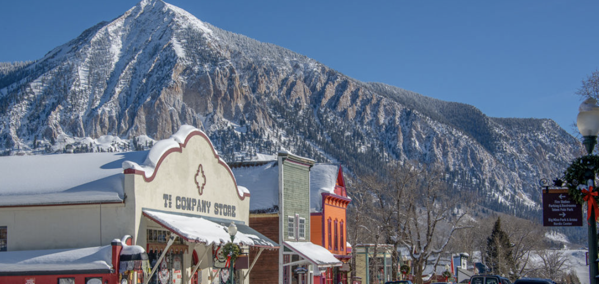
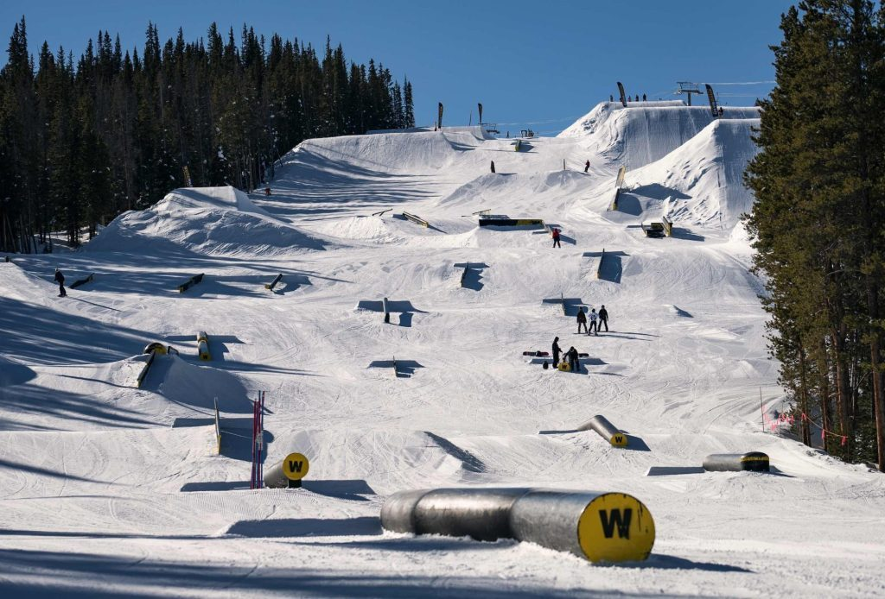

These are some of my favorite mountains that I have been too
| Mountains | Why I like them |
|---|---|
| 1.Breckenridge |
Breckenridge is one of my favorite mountains because of how close it is and how fun it is to explore. Breck is always Super fun to lap runs all day and go to some of the highest elevation terrain in the country. |
| 2.Crested Butte  | Crested Butte is a smaller, lesser known resort in colorado. I like it because it is not always as crowded as much as the bigger resorts, and the town of Crested Butte is very mice. |
| 3.Copper Mountain  | I have only been to Copper a few times but i ended up liking it a lot because of its freestlye terrain. Copper have some of the best terrain park features in the world. |